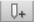
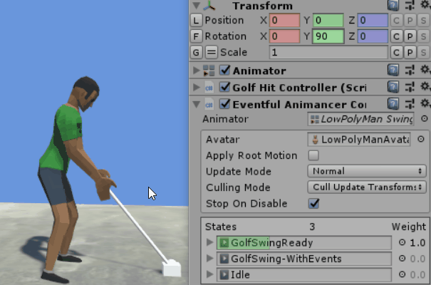

Difficulty: Beginner
Location: Assets/Plugins/Animancer/Examples/05 Animation Events/01 Simple and End Events
Namespace:
Animancer.Examples.AnimationEvents
This example expands upon the Quick Play scene to demonstrate how you can utilise two types of Animation Events:
- Simple Events: the
SimpleEventReceiverallows you to register callbacks that will be triggered by events with the function name"Event". - End Events: events with the function name
"End"will trigger the standardOnEndcallback early rather than waiting for it to actually finish, allowing you to adjust the timing of your transitions.
Pro-Only Features are used in this example: Fading with a non-default duration. Animancer Lite allows you to try out these features in the Unity Editor, but they are not available in runtime builds unless you purchase Animancer Pro.

The GolfHitController script looks like this (with the comments removed since we are about to explain how it works):
using Animancer;
using System;
using UnityEngine;
public sealed class GolfHitController : MonoBehaviour
{
[SerializeField] private AnimancerComponent _Animancer;
[SerializeField] private SimpleEventReceiver _EventReceiver;
[SerializeField] private AnimationClip _Ready;
[SerializeField] private AnimationClip _Swing;
[SerializeField] private AnimationClip _Idle;
[SerializeField] private Rigidbody _Ball;
[SerializeField] private Vector3 _HitVelocity;
[SerializeField] private AudioSource _HitSound;
public enum State { Ready, Swing, Idle, }
private State _State;
private Vector3 _BallStartPosition;
private void Awake()
{
_BallStartPosition = _Ball.position;
}
private void OnEnable()
{
ReturnToReady();
}
private void Update()
{
if (Input.GetMouseButtonDown(0))
{
switch (_State)
{
case State.Ready: StartSwing(); break;
case State.Swing: TryCancelSwing(); break;
case State.Idle: ReturnToReady(); break;
default: throw new ArgumentException("Unhandled State: " + _State);
}
}
}
private void StartSwing()
{
_State = State.Swing;
var state = _Animancer.Play(_Swing, 0.25f, FadeMode.FromStart);
state.OnEnd = OnSwingEnd;
_EventReceiver.onEvent.Set(state, (animationEvent) =>
{
_Ball.isKinematic = false;
_Ball.velocity = _HitVelocity;
_HitSound.Play();
});
}
private void TryCancelSwing()
{
if (_Ball.isKinematic)
{
_State = State.Ready;
_Animancer.Play(_Ready, 0.25f);
}
}
private void OnSwingEnd()
{
_State = State.Idle;
var fadeDuration = AnimancerPlayable.GetFadeOutDuration();
_Animancer.Play(_Idle, fadeDuration);
}
private void ReturnToReady()
{
_State = State.Ready;
_Ball.isKinematic = true;
_Ball.position = _BallStartPosition;
_Animancer.Play(_Ready, 0.25f);
}
}
In addition to the events, we have added an idle state separate from the ready state so the character can relax after they hit the ball. We are just using the regular standing Idle animation though, which doesn't account for the golf club and ends up sticking it through the ground.
Animation Events
This example uses the same GolfSwing animation as the Quick Play example, but with some Animation Events added.
- Select the animation and press
Ctrl + Dto duplicate it. If we just modified the original, all other examples that use it would get error messages because they don't have methods to receive the events we are adding. - Keep the copy selected and open the Animation window via the Window menu (Window/Animation/Animation in Unity 2018.3 or later, or just Window/Animation in older versions).
- Click on the timeline up the top of the Animation window to choose what time to place the event at.
-  Click the
Add Eventbutton to the left of the timeline. - With the newly added event selected, use the Inspector to enter the desired
Function Name. - For this example, we want one on frame 33 with the function name
"Event"and another on frame 60 with the function name"End". We aren't using any of their other parameters.
Simple Event
 In order to have the character hit the ball at a specific time during the swing, we have added an Animation Event on frame 33 with the function name
In order to have the character hit the ball at a specific time during the swing, we have added an Animation Event on frame 33 with the function name "Event". Then to receive that event in our script we are using a SimpleEventReceiver attached to the same object as the Animator and registering our callback in the StartSwing method right after starting the cross fade:
var state = _Animancer.Play(_Swing, 0.25f, FadeMode.FromStart);
state.OnEnd = OnSwingEnd;
_EventReceiver.onEvent.Set(state, (animationEvent) =>
{
_Ball.isKinematic = false;
_Ball.velocity = _HitVelocity;
_HitSound.Play();
});
Since we are using the Set method to specify the state we expect the event to come from, any events with the same name that come from other animations will be ignored. Likewise, if anything starts another animation, this callback will no longer be triggered as if it had been cleared like an OnEnd event. If we had set the _EventReceiver.onEvent.Callback directly, it would still get invoked if something interrupts this state and the event occurs while it was fading out. This could mean that a cancelled animation triggers a callback which was registered for a new animation, likely far earlier than desired.
End Event
| Standard End | Early End |
|---|---|
 |
 |
If we wait for the actual end of the swing animation before we start transitioning to idle (the video on the left), we can observe an unnatural change in the motion when the transition begins. The swing animation goes up to the top of the arc and begins to relax, then when that animation actually finishes it starts transitioning from that pose to Idle. It's fairly smooth, but it's clearly a different motion from the end of the swing. This is made worse by the fact that the Swing animation ends in a pose similar to the one it started in which isn't the Idle pose we want to be in, so the character relaxes towards one pose then suddenly decides to go to a different pose.
 This can be improved by starting the transition early (the video on the right). To achieve this we have added an Animation Event on frame 60 with the function name
This can be improved by starting the transition early (the video on the right). To achieve this we have added an Animation Event on frame 60 with the function name "End". We don't need to do anything else to the code, that event simply triggers our regular OnEnd callback to invoke OnSwingEnd before the actual end of the animation:
private void OnSwingEnd()
{
_State = State.Idle;
var fadeDuration = AnimancerPlayable.GetFadeOutDuration();
_Animancer.Play(_Idle, fadeDuration);
}
We want to transition to Idle, but our script doesn't (and shouldn't) know how long is left in the animation, so instead of hard coding a value or calculating it ourselves we use AnimancerPlayable.GetFadeOutDuration to get the duration specified by the Float parameter of the triggering event. We could have used a positive value to give a specific duration, but since we left it at 0 that method will return the full remaining duration of the animation.
Note that using a custom fade duration is a Pro-Only Feature. Animancer Lite allows you to try out these features in the Unity Editor, but they are not available in runtime builds unless you purchase Animancer Pro.
Since we called Play, the OnEnd callback gets cleared immediately so it won't be called again if the animation happens to reach the end normally before it finishes fading out.
If you watch the Weight of the animations, you can see that normally it only starts fading once the animation is fully complete, but with the early end it starts fading much earlier and finishes fading when the animation is fully complete.